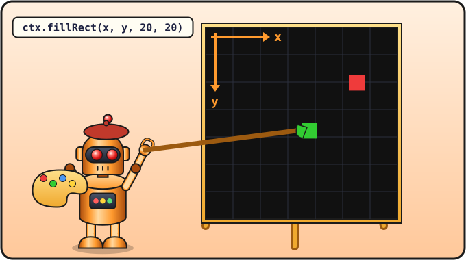

Урок 4 из 16 ⏱ 45 минут
Холст и координаты
Начинаем игру! Создадим файл snake.html — в нём будет жить Змейка до самого конца курса. Сегодня нарисуем игровое поле, голову змейки и яблоко.
- создашь файл игры
snake.html; - добавишь на страницу холст
<canvas>; - узнаешь, как компьютер считает координаты;
- нарисуешь цветные прямоугольники.
| 10 мин | Создаём snake.html и холст |
| 10 мин | Координаты: где x, где y |
| 10 мин | Рисуем поле, голову и яблоко |
| 15 мин | Рисуем свою картинку из прямоугольников |

ctx: x отсчитывают вправо, y — вниз. Зелёная голова стоит в точке (200, 200), красное яблоко — в (300, 100).Новый файл для игры
Создай в Geany новый файл (Ctrl + N) и сразу сохрани его в папку kod под именем snake.html (Ctrl + Shift + S). Набери код:
<!DOCTYPE html>
<html>
<head>
<meta charset="utf-8">
<title>Змейка</title>
</head>
<body>
<h1>Змейка</h1>
<canvas id="game" width="400" height="400"></canvas>
<script>
let canvas = document.getElementById("game");
let ctx = canvas.getContext("2d");
ctx.fillStyle = "black";
ctx.fillRect(0, 0, 400, 400);
ctx.fillStyle = "lime";
ctx.fillRect(200, 200, 20, 20);
ctx.fillStyle = "red";
ctx.fillRect(300, 100, 20, 20);
</script>
</body>
</html>
Сохрани и открой snake.html в браузере (через файловый менеджер, как в первом уроке). Ты увидишь чёрное поле, зелёный квадратик (это будет голова змейки) и красный квадратик (яблоко).
Что тут написано
Холст
<canvas id="game" width="400" height="400"></canvas>
<canvas> — это холст, место для рисования. Его ширина (width) и высота (height) — 400 точек. Каждая такая точка на экране называется пиксель. А id="game" — имя холста, чтобы JavaScript мог его найти.
Кисточка
let canvas = document.getElementById("game");
let ctx = canvas.getContext("2d");
document.getElementById("game")— «найди на странице (document) элемент с именемgame». Найденный холст кладём в переменнуюcanvas.canvas.getContext("2d")— «дай мне инструменты для плоского (2D) рисования». Кладём их в переменнуюctx. Дальшеctxбудет нашей кисточкой.
Эти две строчки можно просто запомнить: они нужны в начале любой программы, которая рисует на холсте.
Рисуем
ctx.fillStyle = "lime"; ctx.fillRect(200, 200, 20, 20);
fillStyle— каким цветом красить. Сначала макаем кисточку в краску.fillRect(x, y, ширина, высота)— нарисовать закрашенный прямоугольник (fill rectangle).
Цвета можно писать английскими словами: "red", "green", "lime", "blue", "yellow", "orange", "purple", "pink", "white", "black", "gray", "brown".
Координаты
Чтобы сказать, где рисовать, нужны два числа: x — сколько пикселей отступить вправо от левого края, и y — сколько пикселей отступить вниз от верхнего края.
Теперь понятно, что значит каждая строчка с fillRect:
fillRect(0, 0, 400, 400)— от левого верхнего угла закрасить квадрат 400 на 400, то есть весь холст.fillRect(200, 200, 20, 20)— отступить 200 вправо и 200 вниз и нарисовать квадратик 20 на 20.
- Передвинь яблоко в левый нижний угол поля.
- Нарисуй за головой ещё два квадратика, чтобы получилась змейка из трёх кусочков:
(180, 200)и(160, 200). - Нарисуй светофор: серый прямоугольник и три цветных квадрата. Потом удали его или закомментируй (см. подсказку ниже), он не нужен в игре.
- ⭐ Цвет можно задать кодом:
"#ff8800"— оранжевый. Попробуй разные буквы и цифры от 0 до f после решётки.
//, компьютер эту строку пропустит. Это комментарий — записка для людей. Так можно оставлять себе пояснения или временно «выключать» строки кода.
// Это голова змейки ctx.fillStyle = "lime";
📄 Весь файл snake.html после этого урока (сверься, если что-то не работает)
<!DOCTYPE html>
<html>
<head>
<meta charset="utf-8">
<title>Змейка</title>
</head>
<body>
<h1>Змейка</h1>
<canvas id="game" width="400" height="400"></canvas>
<script>
let canvas = document.getElementById("game");
let ctx = canvas.getContext("2d");
ctx.fillStyle = "black";
ctx.fillRect(0, 0, 400, 400);
ctx.fillStyle = "lime";
ctx.fillRect(200, 200, 20, 20);
ctx.fillRect(180, 200, 20, 20);
ctx.fillRect(160, 200, 20, 20);
ctx.fillStyle = "red";
ctx.fillRect(300, 100, 20, 20);
</script>
</body>
</html>
Проверь себя
- В папке
kodпоявился файлsnake.html. - Я знаю, что (0, 0) — левый верхний угол, а y растёт вниз.
- Я умею нарисовать прямоугольник нужного цвета в нужном месте.